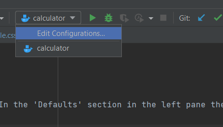
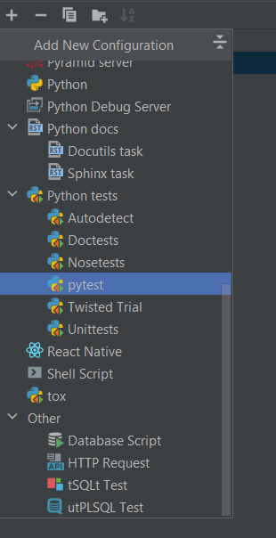
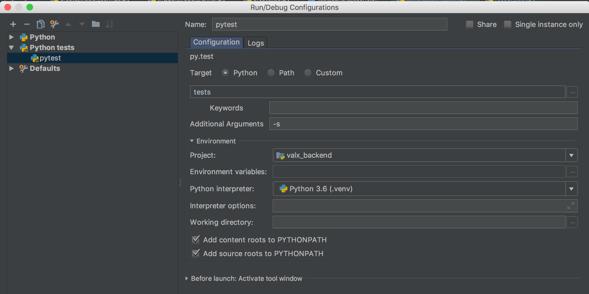
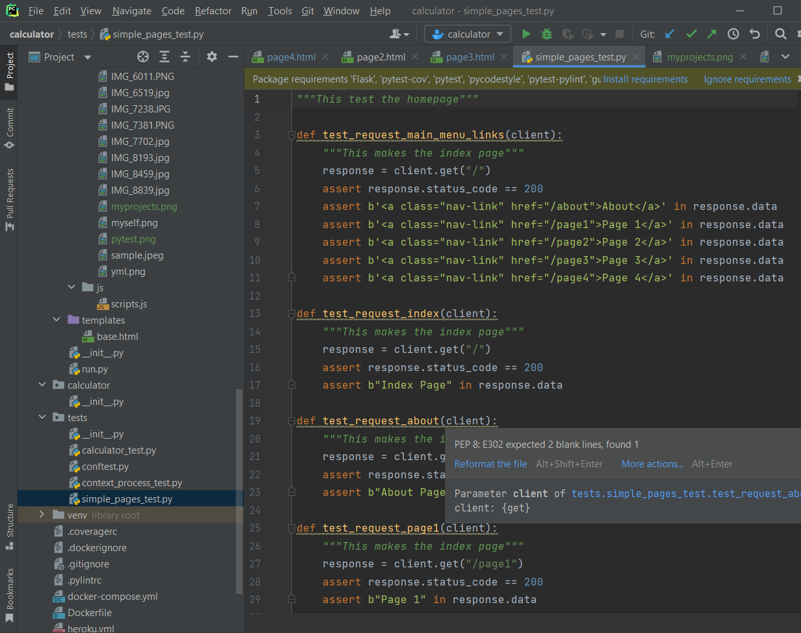

You need to use the Run/Debug Configuration item on the toolbar. Click it and 'Edit Configurations' In the 'Defaults' section in the left pane there is a 'py.test' item
1. Go to edit configurations
2. Add a new run config and select py.test
3. In the run config details, you need to set target=python and the unnamed field below to tests. It looks like this is the name of your test folder. Not too sure tough. I also recommend the -s argument so that if you debug your tests, the console will behave properly. Without the argument pytest captures the output and makes the debug console buggy.
4.My tests folder looks like that. This is just below the root of my project (my_project/tests).
